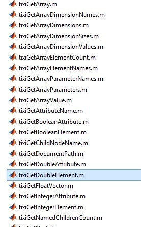

This blog post was created by Nabih Naeem for the CPACS IFAR-X challenge. Nabih was so kind to provide this tutorial also as a TiGL blog post.
Setting up MATLAB
The MATLAB libraries are available under the paths:
\share\tixi3\matlab\share\tigl3\matlab
The location of libraries of TiXI and TiGL must be added to MATLAB search path
Once this is set up, the TiXI and TiGL functions can be used like a regular MATLAB functions.
TiXI
Opening the XML file Firstly, TiXI must be used to open the desired XML file.
Handle = tixiOpenDocument(file location)
The file location must be string (e.g. 'C:/…../aircraft.xml').
Handle is a number that can be used to refer to that file when calling other functions
Reading Data Functions can be used to extract data from the CPACS file. Different functions exist to extract different types of data such as double element, text, float vector, and so on.
RefArea = tixiGetDoubleElement(handle,Xpath)
Here, Xpath must be string 'cpacs/vehicles/…../Area'.
Handle is a number type, XPath is a string type input.
The following figure shows a sample of the functions available for reading data from XML.

These M files can be viewed in MATLAB to see the inputs required
function number = tixiGetDoubleElement(handle, elementPath)
% this file was automatically generated from tixi.h on 2016-09-15
if (ischar(handle))
error('Invalid type of argument "handle"');
end
if not(ischar(elementPath))
error('Invalid type of argument "elementPath"');
end
try
number = tixi_matlab('tixiGetDoubleElement', handle, elementPath);
catch err
error(err.message)
end
end
In this example, handle and elementPaths are the inputs required. A good resource for the TiXI and TiGL functions is the wiki for each of the tools listed below.
- https://dlr-sc.github.io/tigl/doc/latest/tigl_examples.html
- http://tixi.sourceforge.net/Doc/index.html
Brief explanations of each function can be found under Modules tab.
Write Data To write a new parameter into the XML file that previously didn’t have a value, the following function can be used
tixiAddDoubleElement(handle, parentPath, elementName, number, format)
or if you simply want to update the value held by that element
tixiUpdateDoubleElement(handle, elementPath, number, format)
for both cases. Format should be similar to '%0.5g' defines number format,
Handle and number are number stypes, parentPath and elementName format are strings.
Some examples on format types are provided by this resource.
After the manipulation of data is completed the document must be saved for changes to take effect.
Save and Close Document
- Save Document
tixiSaveDocument(handle, xmlFilename) - Close Document
tixiCloseDocument(handle)
here xmlFilename must be a string and contain the name of the desired output file.
Obtaining XPath
- RCE can be used to open XML file and look inside it
- There the Xpath can be obtained for desired value
- But the Xpath obtained from RCE must be modified to be usable
- 'model' must be change to 'model[1]' for first model, and so on for any variable that has multiple entries

In the upper example, the Xpath /cpacs/vehicles/aircraft/model/wings/wing/sections/section/transformation
is incorrect and will produce an error. Instead the unique path /cpacs/vehicles/aircraft/model[1]/wings/wing[3]/sections/section[1]/transformation
must be used as above. This is because the XML document has or can have multiple models, wings, or sections.
This modification has to be done for any parameter with multiple entries.
TiGL
First, the document must be opened using the TiGL function
cpacsHandlePtr = tiglOpenCPACSConfiguration(tixiHandle, configurationUID)
Before opening with TiGL however, TiXI must be used to open the file. The handle output on opening the file with TiXI is then used as an input in this TiGL function. ConfigurationUID specifies, which configuration to load, in case there are multiple configurations in XML document.
Then the TiGL functions can be used as done with TiXI, e.g.
pSpan = tiglWingGetSpan(cpacsHandle, wingUID)
Here, wingUID is 'wing' for a wing, 'htp' for Horizontal tail, or 'vtp' for vertical tail. CpacsHandle is the value obtained when opening file with TiGL.
For those that may need it, the following is part of a MATLAB code I wrote to retrieve cord lengths, airfoil coordinates, and spanwise locations of each section for all sections of the wing (except for wing tip).
%airfoil data
for num=1:segment_count
ProfileName = tiglWingGetProfileName(CPACShandle, 3, num, 1); %airfoil name
WingIndex=3; %3 for wing
[sectionUIDPtr, elementUIDPtr] = tiglWingGetIinnerSectionAndElementUID(CPACShandle, WingIndex, num)
Xpath = tixiUIDGetXPath(handle, elementUIDPtr);
name = tixiGetChildNodeName(handle, Xpath, 3);
Xpath_airfoil = strcat(Xpath, '/', name);
airfoilUID = tixiGetTextElement(handle, Xpath_airfoil)
Xpath_airfoil_data = tixiUIDGetXPath(handle, airfoilUID);
Xpath_airfoil_data_x = strcat(Xpath_airfoil_data, '/pointList/x');
Xpath_airfoil_data_z = strcat(Xpath_airfoil_data, '/pointList/z');
nEJements(num) = tixiGetVectorSize(handle, Xpath_airfoil_data_x);
Airfoil(num, 1, 1:nElements(num)) = tixiGetFloatVector(handle, Xpath_airfoil_data_x, nElements(num));
Airfoil(num, 2, 1:nElements(num)) = tixiGetFloatVector(handle, Xpath_airfoil_data_z, nElements(num));
%cpacs/vehicles/aircraft/model/wings/wing/sections/section/transformation/translation/y
Xpath_length = tixiUIDGetXPath(handle,sectionUIDPtr)
Xpath_spanwise_cord = strcat(Xpath_length, '/transformation/scaling/x')
Xpath_spanwise_length = strcat(Xpath_length, '/transformation/translation/y')
Spanwise(num)=tixiGetDoubleElement(handle, Xpath_spanwise_length)
cord(num) = tixiGetDoubleElement(handle, Xpath_spanwise_cord)
end
Then for last section of the wing tip:
[sectionUIDPtr, elementUIDPtr] = tiglWingGetOuterSectionAndElementUID(CPACShandle, WingIndex, segment_count)
Xpath = tixiUIDGetXPath(file, elementUIDPtr);
name = tixiGetChildNodeName(file, Xpath, 3);
Xpath_airfoil = strcat(Xpath, '/', name);
airfoilUID = tixiGetTextElement(file, Xpath_airfoil)
ProfileName = tiglWingGetProfileName(CPACShandle, 3, segment_count+1, 1) %airfoil name
Xpath_airfoil_data = tixiUIDGetXPath(file, airfoilUID);
Xpath_airfoil_data_x = strcat(Xpath_airfoil_data, '/pointList/x');
Xpath_airfoil_data_z = strcat(Xpath_airfoil_data, '/pointList/z');
nElements(segment_count+1) = tixiGetVectorSize(file, Xpath_airfoil_data_x);
Airfoil(segment_count+1, 1, 1:nElements(segment_count+1)) = tixiGetFloatVector(file,Xpath_airfoil_data_x, nElements(segment_count+1));
Airfoil(segment_count+1, 2, 1:nElements(segment_count+1)) = tixiGetFloatVector(file,Xpath_airfoil_data_z, nElements(segment_count+1));
Xpath_length = tixiUIDGetXPath(file, sectionUIDPtr)
Xpath_spanwise_length = strcat(Xpath_length, '/transformation/translation/y')
Xpath_spanwise_cord = strcat(Xpath_length, '/transformation/scaling/x')
cord(segment_count+1) = tixiGetDoubleElement(file, Xpath_spanwise_cord)
Spanwise(segment_count+1)=tixiGetDoubleElement(file, Xpath_spanwise_length)
The above code may not be the best way to obtain those data but it works. Please inform me if there are any errors with the above code (or if there is a better way to obtain the data).